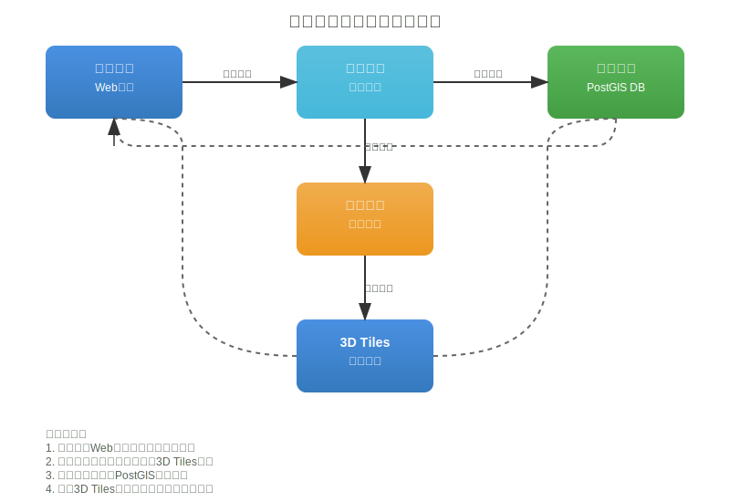

构建一个支持多种三维数据格式的发布服务系统，将三维模型数据转换为3D Tiles格式并存储在PostGIS数据库中，提供高效的三维数据浏览和管理能力。

| 格式类别 | 推荐开源库 | 备选方案 |
|---|---|---|
| FBX | FBX SDK (Autodesk) | Assimp |
| OBJ | Assimp | PyWavefront |
| IFC | IFCOpenShell | BIMserver |
| glTF/GLB | tinygltf, draco | Three.js loaders |
| OSGB | osgEarth | SuperMap iEarth SDK |
| DXF/DWG | Open Design Alliance | LibreCAD core |
| 3DM | OpenNURBS | Rhino3dm |
# 流程示意
上传文件 → 格式检测 → 文件验证 → 元数据提取 → 队列任务创建
所有输入格式首先转换为统一的中间格式： - 几何数据: glTF 2.0 - 纹理数据: WebP/JPEG (压缩) - 属性数据: JSON
原始格式 → 几何解析 → 纹理处理 → 属性提取 → glTF生成 → 3D Tiles生成
CREATE TABLE 3d_datasets (
id BIGINT PRIMARY KEY,
name VARCHAR(255) NOT NULL,
original_format VARCHAR(50),
original_file_path TEXT,
original_file_size BIGINT,
processing_status VARCHAR(50), -- pending, processing, completed, failed
tileset_json JSONB, -- 3D Tiles tileset.json内容
bounds GEOMETRY(POLYGON, 4326), -- 地理边界
center_point GEOMETRY(POINT, 4326), -- 中心点
geometric_error FLOAT, -- 几何误差
created_at TIMESTAMP DEFAULT NOW(),
updated_at TIMESTAMP DEFAULT NOW(),
user_id BIGINT REFERENCES users(id)
);
CREATE TABLE 3d_tiles (
id BIGINT PRIMARY KEY,
dataset_id BIGINT REFERENCES 3d_datasets(id),
tile_x INTEGER NOT NULL, -- 瓦片X索引
tile_y INTEGER NOT NULL, -- 瓦片Y索引
tile_z INTEGER NOT NULL, -- 瓦片层级
geometric_error FLOAT,
bounds GEOMETRY(POLYGON, 4326),
content_uri TEXT, -- B3DM/PNTS/I3DM文件路径
content_type VARCHAR(20), -- b3dm, pnts, i3dm
content_size BIGINT,
transform_matrix FLOAT[16], -- 变换矩阵
metadata JSONB, -- 瓦片元数据
created_at TIMESTAMP DEFAULT NOW()
);
-- 创建空间索引
CREATE INDEX idx_3d_tiles_spatial ON 3d_tiles USING GIST(bounds);
CREATE INDEX idx_3d_tiles_xyz ON 3d_tiles(dataset_id, tile_z, tile_x, tile_y);
CREATE TABLE 3d_features (
id BIGINT PRIMARY KEY,
dataset_id BIGINT REFERENCES 3d_datasets(id),
tile_id BIGINT REFERENCES 3d_tiles(id),
feature_id VARCHAR(255), -- 原始模型中的要素ID
properties JSONB, -- 要素属性
geometry GEOMETRY, -- 简化的二维投影几何(用于查询)
bounds_3d GEOMETRY(POLYHEDRALSURFACEZ, 4326), -- 三维边界框
created_at TIMESTAMP DEFAULT NOW()
);
CREATE INDEX idx_3d_features_spatial ON 3d_features USING GIST(geometry);
CREATE INDEX idx_3d_features_props ON 3d_features USING GIN(properties);
/3d_data/
├── datasets/
│ ├── {dataset_id}/
│ │ ├── original/ # 原始文件
│ │ ├── intermediate/ # 中间处理文件
│ │ └── tiles/ # 3D Tiles输出
│ │ ├── tileset.json
│ │ └── {z}/{x}/{y}.b3dm
└── cache/ # 临时缓存
POST /api/3d/datasets
Content-Type: multipart/form-data
参数:
- file: 三维模型文件
- name: 数据集名称
- coordinate_system: 坐标系(可选)
- metadata: 额外元数据(可选)
GET /api/3d/datasets/{id}/status
返回:
{
"id": "123",
"status": "processing",
"progress": 45,
"message": "正在生成LOD 2级瓦片",
"estimated_completion": "2024-01-01T10:30:00Z"
}
GET /api/3d/datasets/{id}/tileset.json
GET /api/3d/datasets/{id}/tiles/{z}/{x}/{y}.b3dm
GET /api/3d/datasets/{id}/tiles/{z}/{x}/{y}.pnts
GET /api/3d/datasets/{id}/features
POST /api/3d/datasets/{id}/query
支持空间查询、属性查询、范围查询等
使用Redis + Celery构建异步处理系统：
# 任务队列示例
@celery.task(bind=True)
def process_3d_dataset(self, dataset_id, file_path, options):
"""异步处理三维数据集"""
try:
# 1. 更新状态为处理中
update_dataset_status(dataset_id, "processing", 0)
# 2. 格式检测和验证
format_info = detect_3d_format(file_path)
update_dataset_status(dataset_id, "processing", 10)
# 3. 转换为中间格式
intermediate_files = convert_to_intermediate(file_path, format_info)
update_dataset_status(dataset_id, "processing", 40)
# 4. 生成3D Tiles
tileset = generate_3d_tiles(intermediate_files, options)
update_dataset_status(dataset_id, "processing", 80)
# 5. 入库
store_tiles_to_db(dataset_id, tileset)
update_dataset_status(dataset_id, "completed", 100)
except Exception as e:
update_dataset_status(dataset_id, "failed", 0, str(e))
raise
本技术方案提供了完整的三维数据发布服务实现思路，涵盖了从数据接收到服务发布的全流程。实际实施时可根据具体需求调整技术选型和实现细节。